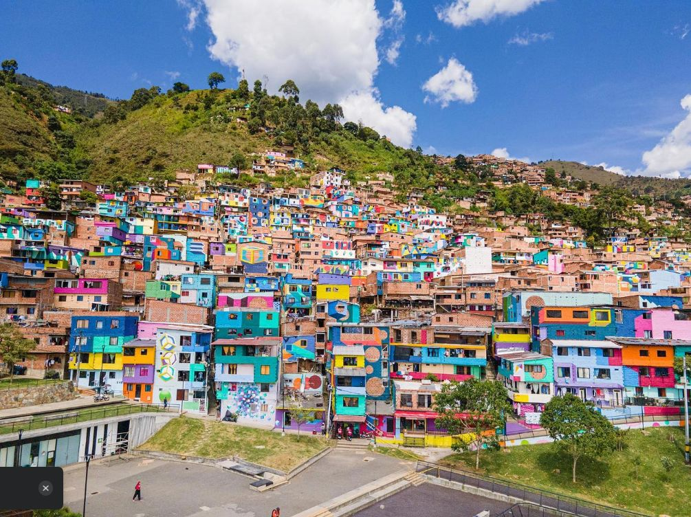

UrbanFest
La feria del barrio Manrique en Medellín es una celebración llena de vida donde la música, la gastronomía y la artesanía se convierten en protagonistas. Las calles se llenan de ritmos populares, presentaciones en vivo y bailes que reflejan la identidad cultural del barrio, mientras los aromas de comidas típicas como arepas rellenas, empanadas y sancochos invitan a compartir en comunidad. Alrededor, artesanos locales exhiben con orgullo sus creaciones en cuero, tela, madera y bisutería, mostrando el talento y la creatividad de los habitantes. Es una fiesta que une tradición, sabor y arte en un ambiente familiar y alegre.
Regístrate
